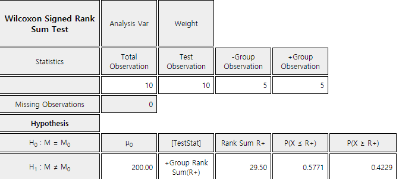

Chapter 10. Nonparametric Testing Hypothesis
10.1.2 Wilcoxon Signed Rank Sum Test
[presentation] [video]
Check the result of the signed rank test using『eStatU』.
Answer
The hypothesis for this problem is to test whether the population median() is 200g or not.
The signed rank sum test examines not only checking the sample data are greater than \(\small M_0\) = 200g (+ sign) or not (- sign), but also checking the rank of values of |data – 200|. If there are tied values, assign the average rank to each of tied values. For example, since there are two tied values of ‘1’ which is the smallest among |data – 200|, the corresponding ranks of 1 and 2 are averaged which is 1.5 and assign the averaged rank to each of value ‘1’.
| Sample data | 203 | 204 | 197 | 195 | 201 | 205 | 198 | 199 | 194 | 207 |
| Sign data | + | + | - | - | + | + | - | - | - | + |
| |data – 200| | 3 | 4 | 3 | 5 | 1 | 5 | 2 | 1 | 6 | 7 |
| Rank of |data – 200| | 4.5 | 6 | 4.5 | 7.5 | 1.5 | 7.5 | 3 | 1.5 | 9 | 10 |
| Rank sum of ‘+’ sign (\(R_{+}\)) | 4.5 + 6 + 1.5 + 7.5 + 10 = 29.5 | |||||||||
The sum of all ranks is 1 + 2 + \(\cdots\) + 10 = \(\frac{10(10+1)}{2} \) = 55. If the rank sum of + sign data (\(\small R_{+}\)) and the rank sum of – sign data (\(\small R_-\)) are similar (approximately 27.5 or so), the null hypothesis \(\small H_0 : M\) = 200g would be true. In this example, \(\small R_{+}\) = 29.5 and \(\small R_-\) = 25.5. Since \(\small R_{+}\) is greater than \(\small R_{-}\), the weight data which are greater than 200g appears to be dominant. What kind of large difference is statistically significant?
To investigate how large a value is statistically significant when the null hypothesis is true, the distribution of random variable \(\small R_{+}\) = 'rank sum of + sign data' (or \(\small R_-\) = 'rank sum of – sign data') should be known. If \(\small H_0\) is true, the number of cases for \(\small R_{+}\) is shown in Table 10.1.3. It is not easy to examine all of these possible rankings to create a distribution table. 『eStatU』shows the distribution of Wilcoxon signed rank sum as shown in <Figure 10.1.7> and its table as in Table 10.1.4.
| Number of data with + sign | All possible combination of ranks | All possible rank sum of \(R_{+}\) |
|---|---|---|
| 0 | 0 | 0 |
| 1 | {1}, {2}, ... , {10} | 1, 2, ... , 10 |
| 2 | {1,2}, {1,3}, ... , {1,10}, {2,3}, ... , {2,10}, \(\cdots\) {9,10} |
3, 4, ... , 11, 5, ... , 12, \(\cdots\) 19 |
| \(\cdots\) | \(\cdots\) | \(\cdots\) |
| 10 | {1,2, ... ,10} | 55 |

<Figure 10.1.7> Distribution of Wilcoxon signed rank sum when \(n\)=10
|
| Wilcoxon Signed Rank Sum Distribution | n = 10 | ||
|---|---|---|---|
| \(x\) | \(P(X = x)\) | \(P(X \le x)\) | \(P(X \ge x)\) |
| 0 | 0.0010 | 0.0010 | 1.0000 |
| 1 | 0.0010 | 0.0020 | 0.9990 |
| 2 | 0.0010 | 0.0029 | 0.9980 |
| 3 | 0.0020 | 0.0049 | 0.9971 |
| 4 | 0.0020 | 0.0068 | 0.9951 |
| 5 | 0.0029 | 0.0098 | 0.9932 |
| 6 | 0.0039 | 0.0137 | 0.9902 |
| 7 | 0.0049 | 0.0186 | 0.9863 |
| 8 | 0.0059 | 0.0244 | 0.9814 |
| 9 | 0.0078 | 0.0322 | 0.9756 |
| \(\cdots\) | \(\cdots\) | \(\cdots\) | \(\cdots\) |
| 47 | 0.0059 | 0.9814 | 0.0244 |
| 48 | 0.0049 | 0.9863 | 0.0186 |
| 49 | 0.0039 | 0.9902 | 0.0137 |
| 50 | 0.0029 | 0.9932 | 0.0098 |
| 51 | 0.0020 | 0.9951 | 0.0068 |
| 52 | 0.0020 | 0.9971 | 0.0049 |
| 53 | 0.0010 | 0.9980 | 0.0029 |
| 54 | 0.0010 | 0.9990 | 0.0020 |
| 55 | 0.0010 | 1.0000 | 0.0010 |
Since it is a two-sided test with the 5% significance level, if you find a 2.5% percentile at both ends, \(P(X \le 8)\) = 0.0244, \(P(X \ge 47)\) = 0.0244. In case of a discrete distribution, we cannot find the exact 2.5 percentile from both ends. Therefore, the decision rule can be written as follows:
Since \(\small R_+\) = 29.5 in this problem, we can not reject \(\small H_0\).
After entering the data in『eStatU』as in <Figure 10.1.8>, pressing the [Execute] button will calculate the sample statistics and show the test result as in <Figure 10.1.9>. The critical lines are the value for containing 5% significance level from both sides (the probability of each end is 2.5%). For a discrete distribution, the choice of the final reject region should be determined by the analyst.

<Figure 10.1.8> 『eStatU』Signed rank sum test
|

The signed rank sum test can be done using 『eStat』. If you enter the data as shown in <Figure 10.1.10>, select 'Weight' as the analysis variable in the variable selection box and click the icon of testing the population mean. Then a dot graph with the 95% confidence interval for the population mean will appear as <Figure 10.1.11>.

Enter a value of 200 from the options below the graph and click the [Wilcoxon Signed Rank Sum Test] button to display the same test result graph and result table as in <Figure 10.1.12>.

If \(x_1 , x_2 , ... , x_n\) are sample data, ranks of \(|x_i - M_0|\) are calculated first and the sum of ranks for the data which are greater than \(M_0\) (+ sign data of \(x_1 , x_2 , ... , x_n\)), denoted as \(R_+\), is calculated. \(R_+\) is the test statistic for the signed rank sum test and the sampling distribution of \(R_+\), denoted as \(w_{+}(n)\), is calculated for testing hypothesis by considering all possible cases.『eStatU』provides \(w_{+}(n)\) until \(n\) = 22. \(w_{+}(n)_{α}\) denotes right 100\(\times α\) percentile of the \(w_{+}(n)\) distribution, but it is not easy to find the exact percentile, because \(w_{+}(n)\) is a discrete distribution and is usually used to approximate the two adjacent values. Table 10.1.5 summarizes the decision rule for the Wilcoxon signed rank sum test for each type of hypothesis.
Type of Hypothesis |
Decision Rule Test Statistic \(R_{+}\)= 'Rank sum of + sign data of \(|x_{i} – M_{0} |\) |
|---|---|
| 1) \( \; H_0 : M = M_0 \) \(\quad\,\, H_1 : M > M_0 \) |
If \( R_{+} > w_{+}(n)_{α} \), then reject \( H_0 \) |
| 2) \( \; H_0 : M = M_0 \) \(\quad\,\, H_1 : M < M_0 \) |
If \( R_{+} < w_{+}(n)_{1-α} \), then reject \( H_0 \) |
| 3) \( \; H_0 : M = M_0 \) \(\quad\,\, H_1 : M \ne M_0 \) |
If \( R_{+} < w_{+}(n)_{1-α/2} \quad or\quad R_{+} > w_{+}(n)_{α/2} \), then reject \( H_0 \) |
If any of the observed values has the same value as , they are not used in the test. In other words, reduce .
|
Practice 10.1.2
A psychologist has selected 9 handicap workers randomly from production workers employed at various factories
in a large industrial complex and their work competency scores are examined as follows. The psychologist wants
to test whether the population median score is 45. Assume the population distribution is symmetrical about the mean.
32, 52, 21, 39, 23, 55, 36, 27, 37
[Ex] ⇨ eBook ⇨ PR100101_CompetencyScore.csv
1) Check whether a parametric test is possible.
2) Apply the Wilcoxon signed rank test with the significance level of 5%.
) Compare this test result with the sign test of [Practice 10.1.1].
|
Table 10.1.6 summarizes the decision rule of the signed rank sum test for each type of hypothesis.
| Type of Hypothesis | Decision Rule Test Statistic \(R_{+}\)= 'Rank sum of + sign data of \(|x_{i} – M_{0} |\) |
|---|---|
| 1) \( \; H_0 : M = M_0 \) \(\quad\,\, H_1 : M > M_0 \) |
If \( \frac{R_{+} - E(R_{+})}{\sqrt{V(R_{+})}} > z_{α} \), then reject \( H_0 \) |
| 2) \( \; H_0 : M = M_0 \) \(\quad\,\, H_1 : M < M_0 \) |
If \( \frac{R_{+} - E(R_{+})}{\sqrt{V(R_{+}}} < z_{1-α} \), then reject \( H_0 \) |
| 3) \( \; H_0 : M = M_0 \) \(\quad\,\, H_1 : M \ne M_0 \) |
If \( \left | \frac{R_{+} - E(R_{+})}{\sqrt{V(R_{+}}} \right | > z_{α/2} \), then reject \( H_0 \) |
| Rank 1 | Rank 2 | Rank 3 | Possible value of \(R_{+}\) |
|---|---|---|---|
| - | - | - | 0 |
| + | - | - | 1 |
| - | + | - | 2 |
| - | - | + | 3 |
| + | + | - | 3 |
| + | - | + | 4 |
| - | + | + | 5 |
| + | + | + | 6 |
| \(R_{+} = x\) | \(P(R_{+} = x)\) |
|---|---|
| 0 | \(\frac{1}{8}\) |
| 1 | \(\frac{1}{8}\) |
| 2 | \(\frac{1}{8}\) |
| 3 | \(\frac{2}{8}\) |
| 4 | \(\frac{1}{8}\) |
| 5 | \(\frac{1}{8}\) |
| 6 | \(\frac{1}{8}\) |
Multiple Choice Exercise
*** Choose one answer and click [Submit] button
10.1 What is NOT the reason to have a nonparametric test?
10.2 Which of the following nonparametric tests is for testing the location parameter of single population?
10.3 What is the sign test?
10.4 What is the transformation of data that is often used for nonparametric tests?
10.5 What is the test statistic used for the sign test?